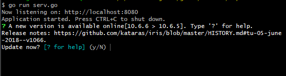
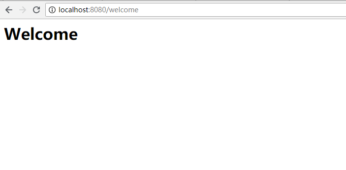

第一次运行
安装完Iris,我们就可以跟着下面的简单示例运行我们的第一个web应用程序了,下面程序通过调用 不同方法实现不同格式的输出如 json,字符串,和直接输出html代码等
我们新建serv.go 文件 写入以下内容.
package main
import (
"github.com/kataras/iris"
"github.com/kataras/iris/middleware/logger"
"github.com/kataras/iris/middleware/recover"
)
func main() {
app := iris.New()
app.Use(recover.New())
app.Use(logger.New())
//输出html
// 请求方式: GET
// 访问地址: http://localhost:8080/welcome
app.Handle("GET", "/welcome", func(ctx iris.Context) {
ctx.HTML("<h1>Welcome</h1>")
})
//输出字符串
// 类似于 app.Handle("GET", "/ping", [...])
// 请求方式: GET
// 请求地址: http://localhost:8080/ping
app.Get("/ping", func(ctx iris.Context) {
ctx.WriteString("pong")
})
//输出json
// 请求方式: GET
// 请求地址: http://localhost:8080/hello
app.Get("/hello", func(ctx iris.Context) {
ctx.JSON(iris.Map{"message": "Hello Iris!"})
})
app.Run(iris.Addr(":8080"))//8080 监听端口
}
现在打开控制台切换到该文件同级目录我们执行以下命令。
$ go run serv.go
我们可以看到如下输出,控制台信息告知我们有新的版本可以更新,如果我们不做更新的话可以无视它,后面我们会看到如何关闭版本更新提示

现在我们打开浏览器或者curl 请求的们定义的地址,这里我们拿 http://localhost:8080/welcome 测试 请求记过如下图:

快去看看控制台输出了什么信息吧
之后我们按 ctrl+c 退出前当程序